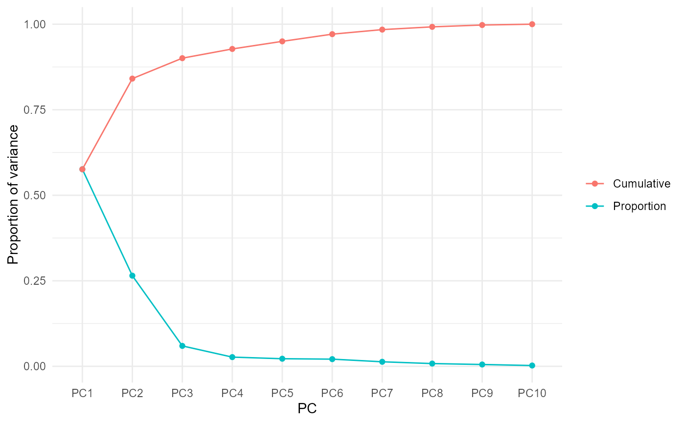

Performs a PCA on selected numeric columns and returns tidy components: observation scores, variable loadings, and the variance decomposition.
Arguments
- data
A data frame.
- cols
<
tidy-select> Numeric columns to analyse.- scale
Logical. If
TRUE(default), columns are standardized to unit variance before decomposition; recommended when indicators use mixed units.- center
Logical. If
TRUE(default), columns are centered.
Value
An object of class mv_pca: a list with components
scores (tibble with .row and PC1...), loadings (tibble with
variable and PC1...), variance (tibble with PC, sdev,
variance, prop_var, cum_var), and meta.
Examples
r = mv_pca(mtcars, cyl:carb)
r$variance
#> # A tibble: 10 × 5
#> PC sdev variance prop_var cum_var
#> <chr> <dbl> <dbl> <dbl> <dbl>
#> 1 PC1 2.40 5.76 0.576 0.576
#> 2 PC2 1.63 2.65 0.265 0.841
#> 3 PC3 0.773 0.597 0.0597 0.901
#> 4 PC4 0.519 0.270 0.0270 0.928
#> 5 PC5 0.471 0.222 0.0222 0.950
#> 6 PC6 0.458 0.210 0.0210 0.971
#> 7 PC7 0.365 0.133 0.0133 0.984
#> 8 PC8 0.284 0.0807 0.00807 0.992
#> 9 PC9 0.232 0.0537 0.00537 0.998
#> 10 PC10 0.154 0.0238 0.00238 1
plot_mv_scree(r)
#> `geom_line()`: Each group consists of only one observation.
#> ℹ Do you need to adjust the group aesthetic?
